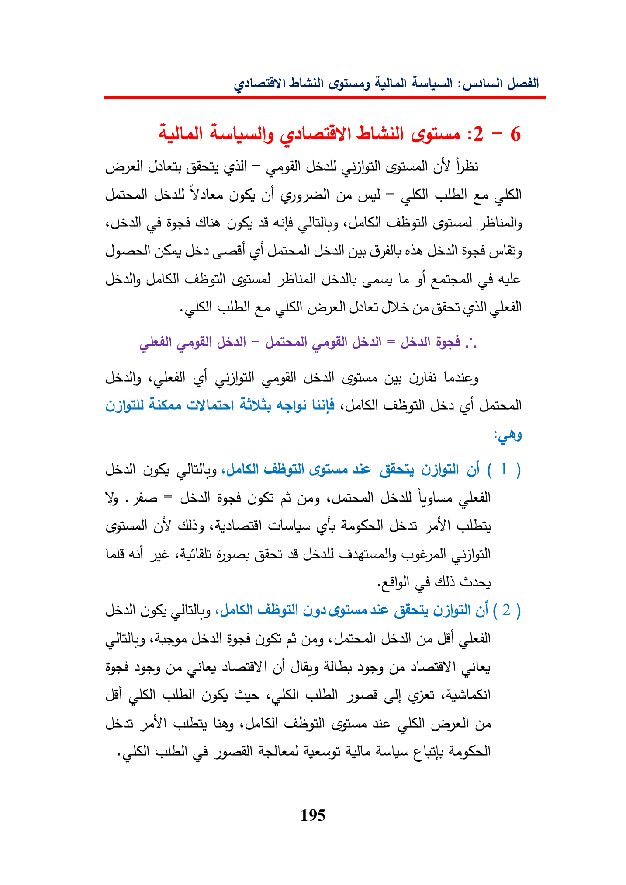

uel32-6SalasGal—GYValesOsoFge—StasASI)(8lia(SaycualcsiGyallsodeUdallabagillLeghale+weASNSalesDIS(gl—=clUdallGurLaricsLILGabagillcelcial«JalslagillaieGlasol(1)Vy«pee=CayListes(pleaGYclayslspe)LeaslpeJdallgill94ticaf(2)UdallgSUdallLillelBgadagagCeGISlingAlla:(yesla!lyASNIgS)GusCala)JSSye)lt:LingabgillsieyeAlsde195